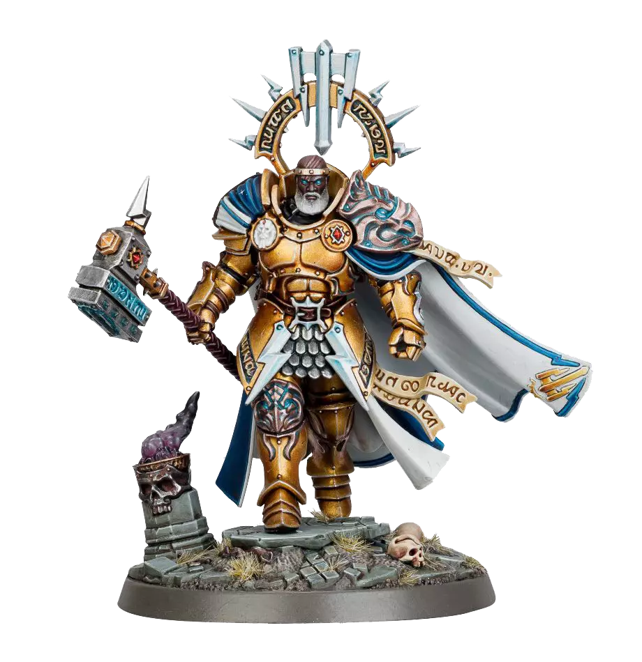
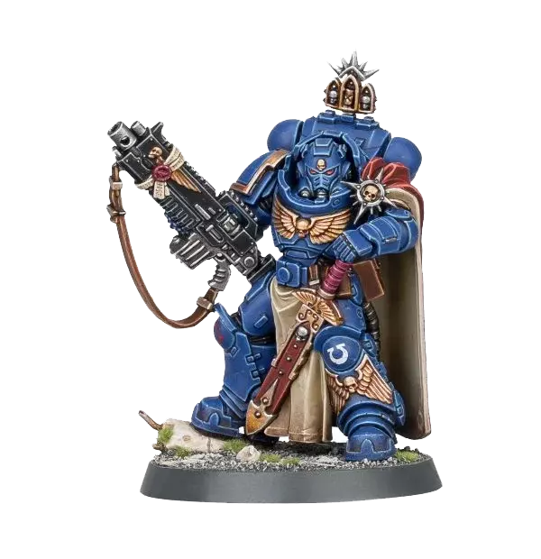

<main id="home">
    <div class="container">
        <section>
            <div class="img1">
                
            </div>
            <div class="img2">
                
            </div>
            <div class="intro">
                <h1>Warhammer</h1>
                <p>Warhammer, le jeu de bataille avec des figurines à monter et à peindre soi-même nécessite de constituer une armée à l'aide d'un codex. C'est un tâche fastidieuse qui peut facilement être résolu avec un programmme. Vous trouverez sur ce site ma solution pour construire facilement une armée sans avoir à ouvrir votre codex.</p>
            </div>
            <article class="army">
                <h2>Nos armées</h2>
                <p> Vous trouverez dans cette section une liste d'armées pré-établies et leurs coûts en point. Ces listes correspondent aux boites de type "patrouille" ou "avant-garde" selon que vous préférez 40K ou Age of Sigmar.</p>
                <a [routerLink]="['/army']" href="/army"><button>Nos armées</button></a>
            </article>
            <article class="builder">
                <h2>Le constructeur</h2>
                <p> Vous pourrez accèder à notre constructeur en suivant ce lien. Le constructeur vous permettra de compter rapidement vos points et de voir en un clin d'oeil quelles unités vous pourrez encore rajouter sans dépasser le total de point prévus pour votre armée.</p>
                <a [routerLink]="['/builder']" href="/builder"><button>Notre constructeur</button></a>
            </article>
        </section>
    </div>
</main>